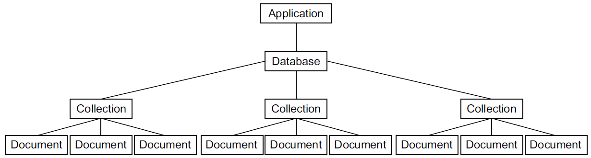

MongoDB
What is MongoDB?
MongoDB in its native shell uses JavaScript.
Every database will have one or more collections.
Every collection will have any number of documents. Documents are basically objects with various properties. Documents don't have to have the same properties, even if they're in the same collection
Documents look a lot like JSON, but they're technically Binary JSON, or BSON. You almost never deal with BSON directly; rather, you'll translate to and from JavaScript objects.
Mongo adds a unique _id property to every document.

Every database will have one or more collections.
Every collection will have any number of documents. Documents are basically objects with various properties. Documents don't have to have the same properties, even if they're in the same collection
Documents look a lot like JSON, but they're technically Binary JSON, or BSON. You almost never deal with BSON directly; rather, you'll translate to and from JavaScript objects.
Mongo adds a unique _id property to every document.
Documents in Mongo correspond with rows or records in SQL.
In contrast to SQL, Mongo doesn't enforce any schema at the database layer.
Collections in Mongo correspond to SQL's tables. Once again, Mongo's collections don't enforce a schema, unlike SQL.
In addition, these documents can embed other documents, unlike in SQL.
In contrast to SQL, Mongo doesn't enforce any schema at the database layer.
Collections in Mongo correspond to SQL's tables. Once again, Mongo's collections don't enforce a schema, unlike SQL.
In addition, these documents can embed other documents, unlike in SQL.
Setting up Mongo
To install Mongo locally, go to later
Talking to Mongo from Node with Mongoose
Mongoose provides a straight-forward, schema-based solution to modeling
your application data and includes built-in type casting, validation, query
building, business logic hooks and more, out of the box.
To install mongoose, you simply type the following command in you bash.
To install mongoose, you simply type the following command in you bash.
npm install mongoose
Now, let's create our first model. To specify this in Mongoose, you must define a schema, which
contains information
about properties, methods, and more.
Create a folder called models in the root of your project, and create a new file called user.js inside that folder. To start, put the contents from the following listing in that file.
Create a folder called models in the root of your project, and create a new file called user.js inside that folder. To start, put the contents from the following listing in that file.
const mongoose = require("mongoose");
const bcrypt = require("bcryptjs");
const SALT_ROUNDS = 10;
const userSchema = new mongoose.Schema({
username: { type: String, required: true, unique: true },
password: { type: String, required: true },
createdAt: { type: Date, default: Date.now },
displayName: String,
bio: String,
});
// Virtual name
userSchema.methods.name = function () {
return this.displayName || this.username;
};
// Hash password before saving
userSchema.pre("save", async function () {
if (!this.isModified("password")) return;
const salt = await bcrypt.genSalt(SALT_ROUNDS);
this.password = await bcrypt.hash(this.password, salt);
});
// Compare password
userSchema.methods.checkPassword = async function (guess) {
return bcrypt.compare(guess, this.password);
};
module.exports = mongoose.model("User", userSchema);
bcryptjs: a pure-JS implementation of bcrypt used for hashing passwords.
SALT_ROUNDS: the cost factor for hashing. Higher = more secure but slower. 10 is a good balance for web apps.
SALT_ROUNDS: the cost factor for hashing. Higher = more secure but slower. 10 is a good balance for web apps.
const mongoose = require("mongoose");
const bcrypt = require("bcryptjs");
const SALT_ROUNDS = 10;
Schema definition:
const userSchema = new mongoose.Schema({
username: { type: String, required: true, unique: true },
password: { type: String, required: true },
createdAt: { type: Date, default: Date.now },
displayName: String,
bio: String,
});
Virtual method: name()
This is a convenience method. If the user has a displayName, return it. Otherwise, fall back to the username.
This is a convenience method. If the user has a displayName, return it. Otherwise, fall back to the username.
userSchema.methods.name = function () {
return this.displayName || this.username;
};
Useful in templates:
<p>Hello, <%= user.name() %></p>
Pre-save hook: hashing the password
This is the heart of secure authentication.
What it does:
What it does:
- Runs before saving a user:
- Mongoose calls this automatically.
- Checks if the password was modified
- If the user updates their profile without changing the password, skip hashing.
- Generates a salt: A salt prevents rainbow-table attacks.
- Hashes the password: The plain password is replaced with a secure hash.
- Why this is important:
- You never store plain text passwords.
- Even if your database leaks, attackers cannot recover the original password.
userSchema.pre("save", async function () {
if (!this.isModified("password")) return;
const salt = await bcrypt.genSalt(SALT_ROUNDS);
this.password = await bcrypt.hash(this.password, salt);
});
Password comparison method
This method is used during login.
What it does:
What it does:
- Takes the password the user typed (guess)
- Compares it with the stored hashed password
- Returns true or false
userSchema.methods.checkPassword = async function (guess) {
return bcrypt.compare(guess, this.password);
};
Exporting the model:
module.exports = mongoose.model("User", userSchema);
Create a simple app.js in the root of your project that
will set up your app with the following code:
var express = require("express");
var mongoose = require("mongoose");
var path = require("path");
var bodyParser = require("body-parser");
var cookieParser = require("cookie-parser");
var session = require("express-session");
var flash = require("connect-flash");
var routes = require("./routes");
var app = express();
mongoose.connect("mongodb://localhost:27017/test");
app.set("port", process.env.PORT || 3000);
app.set("views", path.join(__dirname, "views"));
app.set("view engine", "ejs");
app.use(bodyParser.urlencoded({ extended: false }));
app.use(cookieParser());
app.use(
session({
secret: "TKRv0IJs=HYqrvagQ#&!F!%V]Ww/4KiVs$s,<<MX",
resave: true,
saveUninitialized: true,
}),
);
app.use(flash());
app.use(routes);
app.listen(app.get("port"), function () {
console.log("Server started on port " + app.get("port"));
});
Importing dependencies
- express: the web framework
- mongoose: ODM for MongoDB
- path: helps build file paths
- body-parser: parses form data
- cookie-parser: reads cookies
- express-session: manages user sessions
- connect-flash: stores temporary messages
- routes: your application's route handlers
mongoose.connect("mongodb://localhost:27017/test");
Setting the port
Your app will run on: the port defined in the environment (Heroku, Docker, etc.) or fallback to
3000 locally
app.set("port", process.env.PORT || 3000);
Middleware stack
// This allows Express to read form submissions (req.body).
app.use(bodyParser.urlencoded({ extended: false }));
// This reads cookies sent by the browser.
app.use(cookieParser());
/*
This enables session support : required for login systems.
The secret signs the session ID cookie.
*/
app.use(
session({
secret: "TKRv0IJs=HYqrvagQ#&!F!%V]Ww/4KiVs$s,<<MX",
resave: true,
saveUninitialized: true,
}),
);
// Flash messages are stored in the session and cleared after being displayed.
app.use(flash());
// Registering your routes: This mounts all routes defined in routes.js.
app.use(routes);
// Then start the server.
There are three options we pass to express-session:
- secret allows each session to be encrypted from the clients. This deters hackers from hacking into users' cookies. As noted, it needs to be a bunch of random characters.
- resave is option required by the middleware. When it's set to true, the session will be updated even when it hasn't been modified.
- saveUninitialized is another required option. This resets sessions that are uninitialized.
var express = require("express");
var User = require("./models/user");
var router = express.Router();
router.use(function (req, res, next) {
res.locals.currentUser = req.user;
res.locals.errors = req.flash("error");
res.locals.infos = req.flash("info");
next();
});
// Queries the users collection, returning the newest users first
router.get("/", async function (req, res, next) {
try {
const users = await User.find().sort({ createdAt: "descending" });
res.render("index", { users });
} catch (err) {
next(err);
}
});
router.get("/signup", (req, res) => {
res.render("signup");
});
router.post("/signup", async (req, res, next) => {
try {
const { username, password } = req.body;
// Check if user exists
const existingUser = await User.findOne({ username });
if (existingUser) {
req.flash("error", "User already exists");
return res.redirect("/signup");
}
// Create user
const newUser = new User({
username,
password,
});
await newUser.save();
// Go to home page WITHOUT logging in
return res.redirect("/");
} catch (err) {
next(err);
}
});
router.get("/users/:username", async (req, res, next) => {
try {
const user = await User.findOne({ username: req.params.username });
if (!user) {
return next(404); // or res.status(404).send("User not found")
}
res.render("profile", { user });
} catch (err) {
next(err);
}
});
module.exports = router;
express.Router() creates a mini-application that handles routes.
User is your Mongoose model.
This middleware injects variables into every EJS template:
currentUser → the logged-in user (if any) errors → flash error messages infos → flash info messages
User is your Mongoose model.
This middleware injects variables into every EJS template:
currentUser → the logged-in user (if any) errors → flash error messages infos → flash info messages
router.use(function (req, res, next) {
res.locals.currentUser = req.user;
res.locals.errors = req.flash("error");
res.locals.infos = req.flash("info");
next();
});
Home page route
What it does:
- Fetches all users from MongoDB
- Sorts them newest → oldest
- Renders views/index.ejs
- Passes { users } to the template
router.get("/", async function (req, res, next) {
try {
const users = await User.find().sort({ createdAt: "descending" });
res.render("index", { users });
} catch (err) {
next(err);
}
});
Signup form page
router.get("/signup", (req, res) => {
res.render("signup");
});
- Extracts username and password from the form
- Checks if the username already exists
- If yes → flash error → redirect back
- If no → creates a new user
- pre("save") in your model automatically hashes the password
- Saves the user
- Redirects to home page without logging in
router.post("/signup", async (req, res, next) => {
try {
const { username, password } = req.body;
const existingUser = await User.findOne({ username });
if (existingUser) {
req.flash("error", "User already exists");
return res.redirect("/signup");
}
const newUser = new User({
username,
password,
});
await newUser.save();
return res.redirect("/");
} catch (err) {
next(err);
}
});
User profile route
What it does:
- Reads the :username from the URL
- Looks up that user in MongoDB
- If not found → triggers a 404
- If found → renders profile.ejs with that user
router.get("/users/:username", async (req, res, next) => {
try {
const user = await User.findOne({ username: req.params.username });
if (!user) {
return next(404);
}
res.render("profile", { user });
} catch (err) {
next(err);
}
});
Authenticating users with Passport
Passport is an authentication
middleware for Node. It is designed to serve a singular purpose: authenticate
requests.
We'll look at how to use Passport to authenticate users stored in a Mongo database, but Passport also supports authentication with providers like Facebook, Google, Twitter, and over 100 more.
We'll look at how to use Passport to authenticate users stored in a Mongo database, but Passport also supports authentication with providers like Facebook, Google, Twitter, and over 100 more.
Setting up Passport
When setting up Passport, you'll need to do three things:
SETTING UP THE PASSPORT MIDDLEWARE
To initialize Passport, you'll need the following middlewares:
SETTING UP THE PASSPORT MIDDLEWARE
To initialize Passport, you'll need the following middlewares:
- body-parser: parses HTML forms
- cookie-parser: handles the parsing of cookies from browsers and is required for user sessions
- express-session: Stores user sessions across different browsers
- connect-flash: Shows error messages
- passport.initialize: Initializes the Passport module
- passport.session: Handles Passport sessions
var passport = require("passport");
...............
//app.use(flash());
app.use(passport.initialize());
app.use(passport.session());
SERIALIZING AND DESERIALIZING USERS
Passport needs to know how to serialize and deserialize users. In other words, you'll need to translate a user's session into an actual user object and vice-versa.
In a typical web application, the credentials used to authenticate a user will only be transmitted during the login request. If authentication succeeds, a session will be established and maintained via a cookie set in the user's browser.
Each subsequent request will not contain credentials, but rather the unique cookie that identifies the session. In order to support login sessions, Passport will serialize and deserialize user instances to and from the session.
To keep your code separated, you'll be defining a new file called setuppassport.js. This file will export a single function as follows:
Passport needs to know how to serialize and deserialize users. In other words, you'll need to translate a user's session into an actual user object and vice-versa.
In a typical web application, the credentials used to authenticate a user will only be transmitted during the login request. If authentication succeeds, a session will be established and maintained via a cookie set in the user's browser.
Each subsequent request will not contain credentials, but rather the unique cookie that identifies the session. In order to support login sessions, Passport will serialize and deserialize user instances to and from the session.
To keep your code separated, you'll be defining a new file called setuppassport.js. This file will export a single function as follows:
const LocalStrategy = require("passport-local").Strategy;
const User = require("./models/user");
module.exports = function (passport) {
passport.serializeUser((user, done) => {
done(null, user.id);
});
passport.deserializeUser(async (id, done) => {
try {
const user = await User.findById(id);
done(null, user);
} catch (err) {
done(err);
}
});
passport.use(
"login",
new LocalStrategy(async (username, password, done) => {
try {
const user = await User.findOne({ username });
if (!user) {
return done(null, false, { message: "No user has that username!" });
}
const isMatch = await user.checkPassword(password);
if (!isMatch) {
return done(null, false, { message: "Invalid password." });
}
return done(null, user);
} catch (err) {
return done(err);
}
}),
);
};
passport-local: Passport's strategy for username/password login.
User: Your Mongoose model, which includes password hashing and the checkPassword method.
User: Your Mongoose model, which includes password hashing and the checkPassword method.
const LocalStrategy = require("passport-local").Strategy;
const User = require("./models/user");
Runs when a user logs in successfully.
Decides what gets stored in the session cookie.
Here, you store the user's MongoDB _id (aliased as id).
Decides what gets stored in the session cookie.
Here, you store the user's MongoDB _id (aliased as id).
passport.serializeUser((user, done) => {
done(null, user.id);
});
Runs on every request after login.
Takes the stored _id from the session and looks up the full user in MongoDB.
Makes req.user available in your routes and templates.
Takes the stored _id from the session and looks up the full user in MongoDB.
Makes req.user available in your routes and templates.
passport.deserializeUser(async (id, done) => {
try {
const user = await User.findById(id);
done(null, user);
} catch (err) {
done(err);
}
});
LocalStrategy definition:
- Find user by username: Queries MongoDB for a user with the given username. If not found → fail with message.
- Check password: Calls your model's checkPassword method (bcrypt compare). If mismatch → fail with message. If match → success, return the user object.
- Passport then calls serializeUser to store the user ID in the session. If error → pass error to Passport.
THE REAL AUTHENTICATION
The final part of Passport is setting up a strategy. Some strategies include authentication with sites like Facebook or Google; the strategy you'll use is a local strategy. In short, that means the authentication is up to you, which means you'll have to write a little Mongoose code.
First, require the Passport local strategy into a variable called LocalStrategy, as in the following listing.
The final part of Passport is setting up a strategy. Some strategies include authentication with sites like Facebook or Google; the strategy you'll use is a local strategy. In short, that means the authentication is up to you, which means you'll have to write a little Mongoose code.
First, require the Passport local strategy into a variable called LocalStrategy, as in the following listing.
...........
var LocalStrategy = require("passport-local").Strategy;
...........
Next, tell Passport how to use that local strategy. Your authentication code will run
through the following steps:
in routes.js add the following:
- Look for a user with the supplied username.
- If no user exists, then your user isn't authenticated; say that you've finished with the message “No user has that username!”
- If the user does exist, compare their real password with the password you supply. If the password matches, return the current user. If it doesn't, return “Invalid password.”
in routes.js add the following:
router.get("/login", function (req, res) {
res.render("login");
});
router.get("/logout", function (req, res) {
req.logout();
res.redirect("/");
});
router.post(
"/login",
passport.authenticate("login", {
successRedirect: "/",
failureRedirect: "/login",
failureFlash: true,
}),
);
And this is what the view, at login.ejs, will look like.
<%- include("_header") %>
<h1>Log in</h1>
<form action="/login" method="post">
<input name="username" type="text" class="form-control" placeholder="Username" required autofocus>
<input name="password" type="password" class="form-control" placeholder="Password" required>
<input type="submit" value="Log in" class="btn btn-primary btn-block">
</form>
<%- include("_footer") %>
To edit a profile add the following to route.js
Finally, create an edit page.
Finally, create an edit page.
router.get("/edit", ensureAuthenticated, function (req, res) {
res.render("edit");
});
router.post("/edit", ensureAuthenticated, async (req, res, next) => {
try {
// Update fields from form
req.user.displayName = req.body.displayName; // match schema field
req.user.bio = req.body.bio;
await req.user.save();
req.flash("info", "Profile updated!");
res.redirect("/edit"); // or res.redirect(`/users/${req.user.username}`);
} catch (err) {
next(err);
}
});
function ensureAuthenticated(req, res, next) {
if (req.isAuthenticated()) {
next();
} else {
req.flash("info", "You must be logged in to see this page.");
res.redirect("/login");
}
}
<%- include("_header") %>
<h1>Edit your profile</h1>
<form action="/edit" method="post">
<input name="displayname" type="text" class="form-control" placeholder="Display name"
value="<%= currentUser.displayName || "" %>">
<textarea name="bio" class="form-control"
placeholder="Tell us about yourself!"> <%= currentUser.bio || "" %></textarea>
<input type="submit" value="Update" class="btn btn-primary btn-block">
</form>
<%- include("_footer") %>